Pakete Fangen

Leider ist das Förderband in der Werkstatt des Weihnachtsmanns kaputt. Kannst du die Pakete auffangen, bevor sie auf den Boden fallen und kaputt gehen.
| Figuren | 4 |
| Skripte | 4 |
| Variablen | 3 |
Leider ist das Förderband in der Werkstatt des Weihnachtsmanns kaputt. Kannst du die Pakete auffangen, bevor sie auf den Boden fallen und kaputt gehen.
| Figuren | 4 |
| Skripte | 4 |
| Variablen | 3 |
Lade dir zuerst die Zip Datei herunter.
Du brauchst als erstes 4 Figuren: * die Geschenkspakete (aus der Scratch Bibliothek) * das Förderband (du findest es in der ZIP-Datei) * den Weihnachtssack (du findest ihn in der ZIP-Datei) * die Mitteilung, dass du zu viele Pakete fallen gelassen hast (bitte selbst erstellen)
In der Figur “Paket” müssen wir zuerst noch 2 Kostüme hinzufügen, die anzeigen, ob das Paket am Boden zerbrochen ist, oder erfolgreich gefangen wurde.
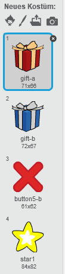{:style=“float:left;“}
Ich habe ein rotes X und einen Stern dafür genommen. Du findest sie auch in der Scratch Bibliothek und kannst sie einfach in der Kostümauswahl hinzufügen.
Danach können wir auch schon mit den Skripten beginnen.
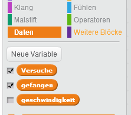{:style=“float:right;“} Wir benötigen ein paar Variablen, um * zu zählen, wie viele Pakete wir schon gefangen haben * uns zu merken, wie viele Pakete bereits zerbrochen sind * eine Möglichkeit zu haben, die Geschwindigkeit und damit die Schwierigkeit einzustellen.
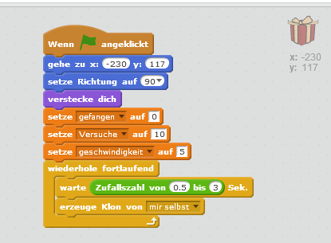{:style=“float:right;“} Als erstes stellen wir die Basiseinstellungen ein. Dann wird alle 0,5 - 3 Sekunden ein neues Paket erzeugt. Dieses Paket wird auf dem Förderband entlang gleiten.
Wir benötigen auch noch ein paar Funktionsblöcke (“Weitere Blöcke”). Damit werden wir das Haupt-Skript ein wenig aufteilen. 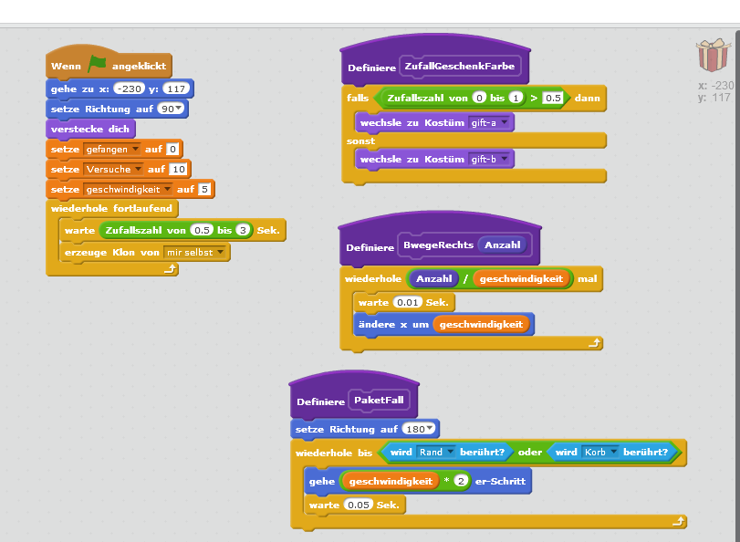{:style=“float:right;“}
Dann geht es auch schon los. Wir werden das neue Paket zuerst bis zu einer von 4 zufälligen Positionen fahren lassen. Dort soll das Paket dann runterfallen. 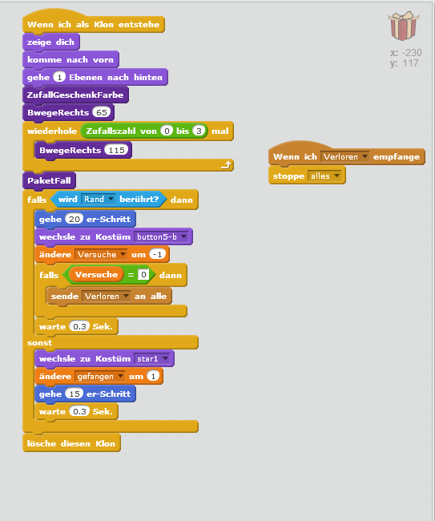{:style=“float:right;“} Das kann auf eine von 2 Arten ausgehen: * Der Rand wird berührt (Geschenk ist kaputt). * Der Sack wird getroffen (Geschenk wurde eingesammelt).
Als nächstes möchten wir natürlich auch den Geschenk-Sack steuern.
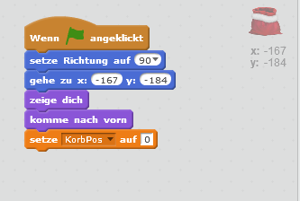{:style=“float:right;“} Auch der Geschenk-Sack möchte am Anfang an die richtige Position gestellt werden.
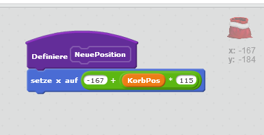{:style=“float:right;“} Hier definieren wir einen Funktionsblock (“Weitere Blöcke”), damit wir die Positionsformel nicht jedes mal eingeben müssen.
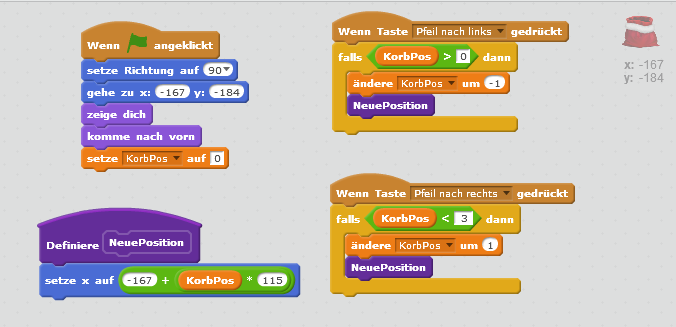{:style=“float:right;“} Weiters soll sich der Sack mit den Pfeiltasten nach rechts und links bewegen lassen. Dafür verwenden wir natürlich den Funktionsblock, den wir vorhin definiert haben.
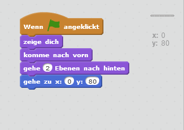{:style=“float:right;“} Die Förderband-Figur befindet sich in der ZIP-Datei und kann einfach hinzugefügt werden. Die Skripte dafür sind sehr einfach und sollen nur die Position festlegen.
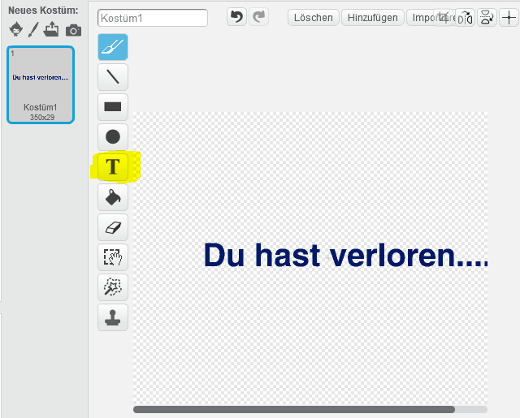{:style=“float:right;“} Diese Figur solltest du selbst entwerfen. Lass dir etwas Lustiges oder Tröstendes einfallen.
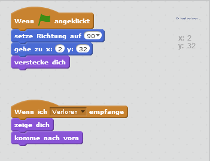{:style=“float:right;“} Auch dafür sind die Skripte sehr einfach und legen nur die Position fest. Ausserdem soll die Abschiedsnachricht angezeigt werden, wenn das Spiel beendet wurde.
Viel Spass beim Pakete sammeln!